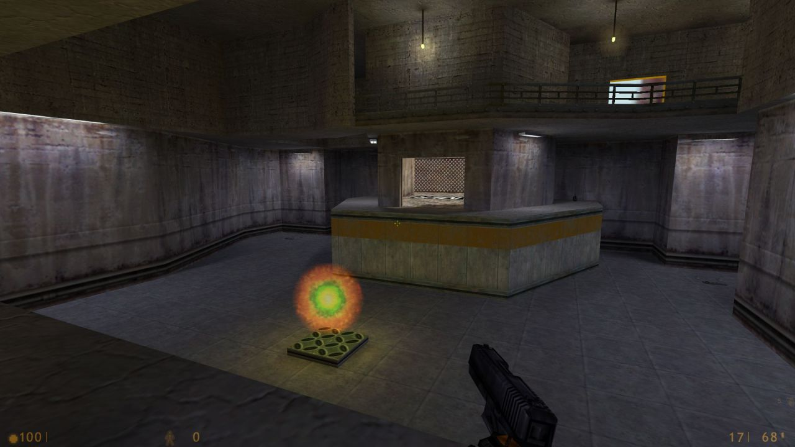

The Hill for Half-Life deathmatch by Valve
Half-Life, released 18 years ago - November 19, 1998
joewintergreen said: Yo where can I get this map
It was a PC Gamer exclusive when released, and was in Half-Life: Further Data. I never played it back in the day, seems like a great map though.